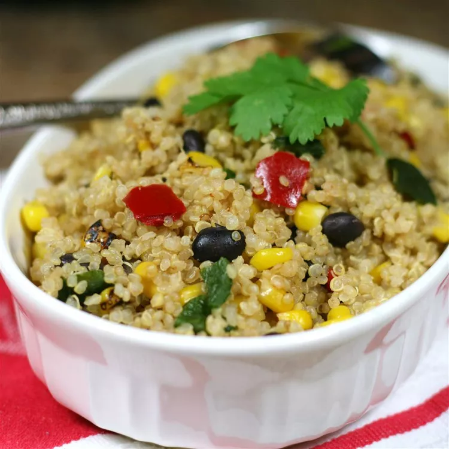

Simple Mexican Quinoa

How to make Simple Mexican Quinoa
This is my new favorite quinoa dish. It is super simple.
Ingredients
- 2 cups water
- 1 cup quinoa
- 1 (12 ounce) package frozen corn and black bean vegetable blend
Step by Step Instructions
- Bring water and quinoa to a boil in a saucepan. Reduce heat to medium-low,
cover, and simmer
until quinoa is tender and water is absorbed, 15 to 20 minutes.
- Place vegetable blend in a microwave-safe bowl;
microwave until heated through, about 5 minutes.
Stir vegetable blend into quinoa.
Back to Homepage